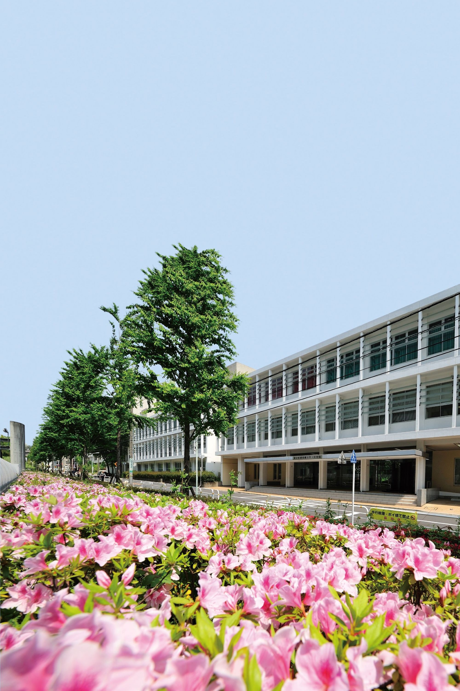

【お知らせ】ステージ企画の出演団体を公開しました
ステージの出演時間・観覧エリアの案内はタイムテーブルをご確認ください。
N. 2026 ／ 医愛祭 — Iaisai
この秋、キャンパスに「結（むすび）」が生まれます。
学びと地域、世代と世代、そして一人ひとりの想いが出会い、つながり、未来へと結ばれていく二日間。
どうぞ、あなたの“結び目”を見つけにお越しください。


ステージの出演時間・観覧エリアの案内はタイムテーブルをご確認ください。
混雑緩和のため、時間帯によって入場口を分ける場合があります。
来場者案内・会場運営のサポートにご協力ください。
| 時間 | メインステージ | サブステージ |
|---|---|---|
| 10:00–10:20 | オープニングセレモニー | キャンパスツアー案内（集合説明） |
| 10:30–11:00 | 学生パフォーマンス（ダンス） | 健康チェック体験（ミニ講話） |
| 11:10–11:40 | 軽音ライブ | 手洗い・感染対策ミニワークショップ |
| 12:00–13:00 | ランチタイム（会場アナウンス） | 休憩・自由観覧 |
| 13:10–13:50 | トーク企画「結：地域と医療をつなぐ」 | こども向け体験（スタンプラリー説明） |
| 14:00–14:30 | 学生パフォーマンス（合唱） | 受験生向け大学紹介（ミニセッション） |
| 15:00–15:30 | 抽選会／来場者参加企画 | 研究紹介ポスター・ショートピッチ |
| 16:40–17:00 | クロージング | — |
地域食材を使った限定メニューや、学生考案のフードを提供します。
ハンドメイド雑貨の販売や、収益の一部を寄付するチャリティー企画を実施します。
測定結果をもとに、生活習慣のワンポイントアドバイスをお伝えします。
もしもの時に役立つ、基本の対応を短時間で学べます。
学生・教員の研究や地域連携の取り組みを、わかりやすく紹介します。
（ここにマップ画像／PDFへのリンクを配置）
（Google マップ埋め込み想定スペース）
基本的に予約不要でご入場いただけます。ただし、一部の体験企画や講演は混雑状況により整理券を配布する場合があります。配布場所・時間は当日「総合案内」でご確認ください。
はい。地域・子ども向けの体験企画やスタンプラリーなど、幅広い年代の方にお楽しみいただける内容をご用意しています。ベビーカーでの移動や休憩スペースについても、アクセス＆マップ内の案内をご参照ください。
会場内の撮影は原則可能ですが、来場者のプライバシー保護のため、他の方が特定できる形での撮影・公開はご配慮ください。また、企画によっては撮影をお断りする場合があります。現地掲示・スタッフの案内に従ってください。